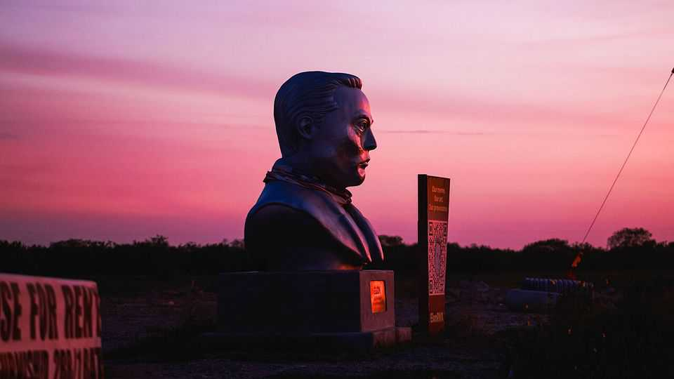
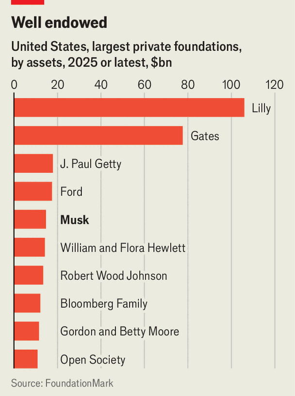

Elon Musk's foundation is opaque, miserly and self-serving
The world’s richest man disdains charity. His money is where his mouth is

Oct 15th 2026
The world’s richest man does not much believe in philanthropy. In August Elon Musk said in a social-media post that Brian Armstrong, a crypto boss, was right to dismiss many charities as “net negative” for the world. Weeks earlier he had joined attacks on Mackenzie Scott, the ex-wife of Jeff Bezos, Amazon’s founder, and one of the biggest donors in history, for “making the world a worse place”. Mr Musk’s distaste for do-goodery is not new. He led the near-demolition of America’s aid agency, and was once quoted describing philanthropy as “bullshit”. In Mr Musk’s reckoning, his gift to humanity is his for-profit work: the electric vehicles he produces at Tesla, the space exploration he is doing at SpaceX and the political debate on his social-media site, X.

And yet Mr Musk also runs America’s fifth-largest charitable private foundation. With $14.7bn in assets at last count, the Musk Foundation is a hair smaller than the Ford Foundation and more than double the size of the Rockefeller Foundation, two long-standing pillars of philanthropy (see chart). Unlike these organisations, however, the Musk Foundation says almost nothing about its work. Its website contains a mere 33 words, laying out the causes it supports, which include renewable energy, space exploration and artificial-intelligence safety. And it is run by a team of just three: Mr Musk; the head of his family office, Jared Birchall; and Matilda Simon, another family-office employee. The only clues to the foundation’s activities are contained in tax returns. The Economist scoured the filings covering the period from July 2020 to the end of 2024 to find out: how does the tycoon who detests philanthropy give?
The first observation is that Mr Musk, like most very rich people, appears to craft his philanthropy to minimise his taxes. His biggest gifts—a total of around $8bn in Tesla stock—went to his foundation in 2021 and 2022, years when he came into many billions of dollars of shares and faced a whopping tax bill as a result. Brian Mittendorf, an accounting expert at Ohio State University, says founders enjoy a “double benefit” from such donations: they avoid paying capital-gains tax on the shares, which originally cost them relatively little, and can then claim a charitable deduction based on the (far higher) market value. At the end of 2024, the book value of the stock held by the Musk Foundation was around $5.7m, whereas their market value was an estimated $14bn.
In return for tax breaks, philanthropists are supposed to put their money to good causes. But the Musk Foundation has been painfully slow to do so. Under American law, foundations that only make grants must distribute roughly 5% of their investment assets every year or else face penalties, with a one-year grace period to make up any shortfall. Many foundations miss the target now and then. But the Musk Foundation has made use of the grace period in each of the past four years for which filings are available, and at the end of 2024 was on the hook for $400m, according to FoundationMark, a data provider. Mr Musk—who predicted in a recent interview with this newspaper that the economic abundance brought about by AI would make money irrelevant as soon as a decade from now—seems in no hurry to give away his fortune in the meantime.
What is more, according to tax filings and estimates from Candid, another data provider, a big chunk of the amount the foundation has donated has merely been put into a holding pen. Almost one-tenth of the $1bn disbursed between 2020 and 2024 went to Fidelity Charitable, which runs donor-advised funds (DAFs), accounts that let donors hold money destined for charity indefinitely with no reporting requirements. There is no rule against charitable private foundations donating to DAFs. But, says Mr Mittendorf, such transfers are against the “spirit of the rules”. “You’re just moving money from one bucket to another bucket,” he explains.
Of the money that has actually been handed out by the Musk Foundation, the vast majority has gone to other organisations linked to the entrepreneur. Over 58% was funnelled to The Foundation, a cryptically named charity led by Mr Birchall that happens to share the same address as the Musk Foundation. According to its tax filing for 2024, The Foundation aims to build schools dedicated to STEM (Science, Technology, Engineering and Mathematics) education. Yet it is unclear what it does with all its money. Mr Musk did fund a private school named Ad Astra (Latin for “to the stars”) near SpaceX’s previous headquarters in California, which had a student body of less than 50 (including Mr Musk’s children). But it was wound down around the time of the covid-19 pandemic. According to the Ad Astra website, a new school in Texas, where SpaceX is now based, is in the works.
Other gifts appear somewhat self-serving. In 2021 Jared Isaacman, a fellow billionaire space enthusiast, bankrolled a four-person SpaceX mission into orbit in order to raise money for a children’s hospital, raffling off one of the seats for the flight. Mr Musk chipped in with a $55m donation, among the largest ever by his foundation. (Mr Isaacman subsequently paid for another expedition into the void, during which he performed the first commercial spacewalk. These days he runs NASA.) A smattering of gifts to non-profit groups in southern Texas followed the explosion of a SpaceX rocket in 2021, which showered the local area in debris.
Among the remainder of the gifts, there is no discernible philanthropic strategy. Put aside The Foundation and Fidelity, and the average donation made by the Musk Foundation in 2024 was less than $1.4m. The money has gone to a hotch-potch of causes, from sea-turtle conservation to spinal medicine. Mr Musk “puts a real emphasis on being a visionary and having bold ideas,” says Benjamin Soskis of the Urban Institute, a left-leaning American think-tank. “But even in the most sympathetic reading of the Musk Foundation, you can’t find that type of approach.”
As far as its style of giving goes, the Musk Foundation is fairly hands-off. Ironically, grant recipients liken it to Ms Scott’s efforts. She has upturned traditional philanthropy by maintaining only a small staff and handing out money without prescribing what it is spent on or asking for regular reports. Likewise, the Musk Foundation pays no salaries, and its three-person leadership team devotes on average a combined 2.1 hours per week to its work. Karim Meghji, boss of CodeAI, an education non-profit that has received funding from the foundation, describes the process as “very simple”. “It’s very much the phone call, the cheque, and then we send a report at the end of the year,” he explains.
Mr Musk appears more enthusiastic about giving his money away to political causes than to charitable ones. In recent months he has donated at least $275m to the Republican Party ahead of America’s midterm elections. That may change. The money Mr Musk has put into his foundation cannot be withdrawn, and he has hinted repeatedly in the past that he plans to make big gifts in the future. For now, though, the world’s richest plutocrat appears to be one of its least generous. ■